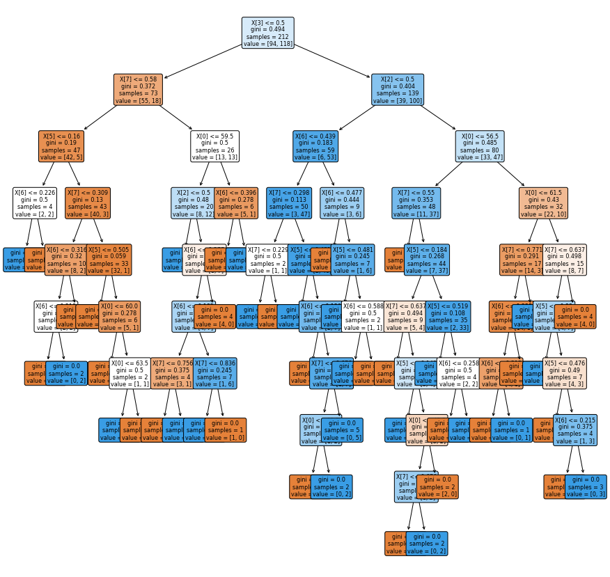

import numpy as np
from sklearn import preprocessing
import pandas as pd
dataset = pd.read_csv("https://raw.githubusercontent.com/arshell19/datamining/main/heart.csv")
dataset.head()
| age | sex | cp | trestbps | chol | fbs | restecg | thalach | exang | oldpeak | slope | ca | thal | target | |
|---|---|---|---|---|---|---|---|---|---|---|---|---|---|---|
| 0 | 63 | 1 | 3 | 145 | 233 | 1 | 0 | 150 | 0 | 2.3 | 0 | 0 | 1 | 1 |
| 1 | 37 | 1 | 2 | 130 | 250 | 0 | 1 | 187 | 0 | 3.5 | 0 | 0 | 2 | 1 |
| 2 | 41 | 0 | 1 | 130 | 204 | 0 | 0 | 172 | 0 | 1.4 | 2 | 0 | 2 | 1 |
| 3 | 56 | 1 | 1 | 120 | 236 | 0 | 1 | 178 | 0 | 0.8 | 2 | 0 | 2 | 1 |
| 4 | 57 | 0 | 0 | 120 | 354 | 0 | 1 | 163 | 1 | 0.6 | 2 | 0 | 2 | 1 |
df_without_column_for_convert = pd.DataFrame(dataset, columns = ['age','trestbps','chol','thalach', 'target'])
df_without_column_for_convert.head()
| age | trestbps | chol | thalach | target | |
|---|---|---|---|---|---|
| 0 | 63 | 145 | 233 | 150 | 1 |
| 1 | 37 | 130 | 250 | 187 | 1 |
| 2 | 41 | 130 | 204 | 172 | 1 |
| 3 | 56 | 120 | 236 | 178 | 1 |
| 4 | 57 | 120 | 354 | 163 | 1 |
df_gender=pd.get_dummies(dataset['sex'])
df_gender
| 0 | 1 | |
|---|---|---|
| 0 | 0 | 1 |
| 1 | 0 | 1 |
| 2 | 1 | 0 |
| 3 | 0 | 1 |
| 4 | 1 | 0 |
| ... | ... | ... |
| 298 | 1 | 0 |
| 299 | 0 | 1 |
| 300 | 0 | 1 |
| 301 | 0 | 1 |
| 302 | 1 | 0 |
303 rows × 2 columns
df_exang=pd.get_dummies(dataset['exang'])
df_exang
| 0 | 1 | |
|---|---|---|
| 0 | 1 | 0 |
| 1 | 1 | 0 |
| 2 | 1 | 0 |
| 3 | 1 | 0 |
| 4 | 0 | 1 |
| ... | ... | ... |
| 298 | 0 | 1 |
| 299 | 1 | 0 |
| 300 | 1 | 0 |
| 301 | 0 | 1 |
| 302 | 1 | 0 |
303 rows × 2 columns
df_new = pd.concat([df_without_column_for_convert, df_gender,df_exang], axis=1)
df_new.head()
| age | trestbps | chol | thalach | target | 0 | 1 | 0 | 1 | |
|---|---|---|---|---|---|---|---|---|---|
| 0 | 63 | 145 | 233 | 150 | 1 | 0 | 1 | 1 | 0 |
| 1 | 37 | 130 | 250 | 187 | 1 | 0 | 1 | 1 | 0 |
| 2 | 41 | 130 | 204 | 172 | 1 | 1 | 0 | 1 | 0 |
| 3 | 56 | 120 | 236 | 178 | 1 | 0 | 1 | 1 | 0 |
| 4 | 57 | 120 | 354 | 163 | 1 | 1 | 0 | 0 | 1 |
df_target = pd.DataFrame(dataset, columns = ['target'])
df_target.head()
| target | |
|---|---|
| 0 | 1 |
| 1 | 1 |
| 2 | 1 |
| 3 | 1 |
| 4 | 1 |
df_without_target=df_new.drop(['target'], axis=1)
df_new2 = pd.concat([df_without_target,df_target], axis=1)
df_new2
| age | trestbps | chol | thalach | 0 | 1 | 0 | 1 | target | |
|---|---|---|---|---|---|---|---|---|---|
| 0 | 63 | 145 | 233 | 150 | 0 | 1 | 1 | 0 | 1 |
| 1 | 37 | 130 | 250 | 187 | 0 | 1 | 1 | 0 | 1 |
| 2 | 41 | 130 | 204 | 172 | 1 | 0 | 1 | 0 | 1 |
| 3 | 56 | 120 | 236 | 178 | 0 | 1 | 1 | 0 | 1 |
| 4 | 57 | 120 | 354 | 163 | 1 | 0 | 0 | 1 | 1 |
| ... | ... | ... | ... | ... | ... | ... | ... | ... | ... |
| 298 | 57 | 140 | 241 | 123 | 1 | 0 | 0 | 1 | 0 |
| 299 | 45 | 110 | 264 | 132 | 0 | 1 | 1 | 0 | 0 |
| 300 | 68 | 144 | 193 | 141 | 0 | 1 | 1 | 0 | 0 |
| 301 | 57 | 130 | 131 | 115 | 0 | 1 | 0 | 1 | 0 |
| 302 | 57 | 130 | 236 | 174 | 1 | 0 | 1 | 0 | 0 |
303 rows × 9 columns
from sklearn.preprocessing import MinMaxScaler
df_for_minmax_scaler=pd.DataFrame(dataset, columns = ['trestbps', 'chol', 'thalach'])
df_for_minmax_scaler.to_numpy()
scaler = MinMaxScaler()
df_hasil_minmax_scaler=scaler.fit_transform(df_for_minmax_scaler)
df_hasil_minmax_scaler = pd.DataFrame(df_hasil_minmax_scaler,columns = ['trestbps', 'chol', 'thalach'])
df_hasil_minmax_scaler
| trestbps | chol | thalach | |
|---|---|---|---|
| 0 | 0.481132 | 0.244292 | 0.603053 |
| 1 | 0.339623 | 0.283105 | 0.885496 |
| 2 | 0.339623 | 0.178082 | 0.770992 |
| 3 | 0.245283 | 0.251142 | 0.816794 |
| 4 | 0.245283 | 0.520548 | 0.702290 |
| ... | ... | ... | ... |
| 298 | 0.433962 | 0.262557 | 0.396947 |
| 299 | 0.150943 | 0.315068 | 0.465649 |
| 300 | 0.471698 | 0.152968 | 0.534351 |
| 301 | 0.339623 | 0.011416 | 0.335878 |
| 302 | 0.339623 | 0.251142 | 0.786260 |
303 rows × 3 columns
df_drop_column_for_minmaxscaler=df_new2.drop(['trestbps', 'chol', 'thalach'], axis=1)
df_drop_column_for_minmaxscaler
| age | 0 | 1 | 0 | 1 | target | |
|---|---|---|---|---|---|---|
| 0 | 63 | 0 | 1 | 1 | 0 | 1 |
| 1 | 37 | 0 | 1 | 1 | 0 | 1 |
| 2 | 41 | 1 | 0 | 1 | 0 | 1 |
| 3 | 56 | 0 | 1 | 1 | 0 | 1 |
| 4 | 57 | 1 | 0 | 0 | 1 | 1 |
| ... | ... | ... | ... | ... | ... | ... |
| 298 | 57 | 1 | 0 | 0 | 1 | 0 |
| 299 | 45 | 0 | 1 | 1 | 0 | 0 |
| 300 | 68 | 0 | 1 | 1 | 0 | 0 |
| 301 | 57 | 0 | 1 | 0 | 1 | 0 |
| 302 | 57 | 1 | 0 | 1 | 0 | 0 |
303 rows × 6 columns
df_new3 = pd.concat([df_drop_column_for_minmaxscaler,df_hasil_minmax_scaler], axis=1)
df_new3
| age | 0 | 1 | 0 | 1 | target | trestbps | chol | thalach | |
|---|---|---|---|---|---|---|---|---|---|
| 0 | 63 | 0 | 1 | 1 | 0 | 1 | 0.481132 | 0.244292 | 0.603053 |
| 1 | 37 | 0 | 1 | 1 | 0 | 1 | 0.339623 | 0.283105 | 0.885496 |
| 2 | 41 | 1 | 0 | 1 | 0 | 1 | 0.339623 | 0.178082 | 0.770992 |
| 3 | 56 | 0 | 1 | 1 | 0 | 1 | 0.245283 | 0.251142 | 0.816794 |
| 4 | 57 | 1 | 0 | 0 | 1 | 1 | 0.245283 | 0.520548 | 0.702290 |
| ... | ... | ... | ... | ... | ... | ... | ... | ... | ... |
| 298 | 57 | 1 | 0 | 0 | 1 | 0 | 0.433962 | 0.262557 | 0.396947 |
| 299 | 45 | 0 | 1 | 1 | 0 | 0 | 0.150943 | 0.315068 | 0.465649 |
| 300 | 68 | 0 | 1 | 1 | 0 | 0 | 0.471698 | 0.152968 | 0.534351 |
| 301 | 57 | 0 | 1 | 0 | 1 | 0 | 0.339623 | 0.011416 | 0.335878 |
| 302 | 57 | 1 | 0 | 1 | 0 | 0 | 0.339623 | 0.251142 | 0.786260 |
303 rows × 9 columns
df_new3_without_target=df_new3.drop(['target'], axis=1)
df_new3_without_target
| age | 0 | 1 | 0 | 1 | trestbps | chol | thalach | |
|---|---|---|---|---|---|---|---|---|
| 0 | 63 | 0 | 1 | 1 | 0 | 0.481132 | 0.244292 | 0.603053 |
| 1 | 37 | 0 | 1 | 1 | 0 | 0.339623 | 0.283105 | 0.885496 |
| 2 | 41 | 1 | 0 | 1 | 0 | 0.339623 | 0.178082 | 0.770992 |
| 3 | 56 | 0 | 1 | 1 | 0 | 0.245283 | 0.251142 | 0.816794 |
| 4 | 57 | 1 | 0 | 0 | 1 | 0.245283 | 0.520548 | 0.702290 |
| ... | ... | ... | ... | ... | ... | ... | ... | ... |
| 298 | 57 | 1 | 0 | 0 | 1 | 0.433962 | 0.262557 | 0.396947 |
| 299 | 45 | 0 | 1 | 1 | 0 | 0.150943 | 0.315068 | 0.465649 |
| 300 | 68 | 0 | 1 | 1 | 0 | 0.471698 | 0.152968 | 0.534351 |
| 301 | 57 | 0 | 1 | 0 | 1 | 0.339623 | 0.011416 | 0.335878 |
| 302 | 57 | 1 | 0 | 1 | 0 | 0.339623 | 0.251142 | 0.786260 |
303 rows × 8 columns
df_new4 = pd.concat([df_new3_without_target,df_target], axis=1)
df_new4
| age | 0 | 1 | 0 | 1 | trestbps | chol | thalach | target | |
|---|---|---|---|---|---|---|---|---|---|
| 0 | 63 | 0 | 1 | 1 | 0 | 0.481132 | 0.244292 | 0.603053 | 1 |
| 1 | 37 | 0 | 1 | 1 | 0 | 0.339623 | 0.283105 | 0.885496 | 1 |
| 2 | 41 | 1 | 0 | 1 | 0 | 0.339623 | 0.178082 | 0.770992 | 1 |
| 3 | 56 | 0 | 1 | 1 | 0 | 0.245283 | 0.251142 | 0.816794 | 1 |
| 4 | 57 | 1 | 0 | 0 | 1 | 0.245283 | 0.520548 | 0.702290 | 1 |
| ... | ... | ... | ... | ... | ... | ... | ... | ... | ... |
| 298 | 57 | 1 | 0 | 0 | 1 | 0.433962 | 0.262557 | 0.396947 | 0 |
| 299 | 45 | 0 | 1 | 1 | 0 | 0.150943 | 0.315068 | 0.465649 | 0 |
| 300 | 68 | 0 | 1 | 1 | 0 | 0.471698 | 0.152968 | 0.534351 | 0 |
| 301 | 57 | 0 | 1 | 0 | 1 | 0.339623 | 0.011416 | 0.335878 | 0 |
| 302 | 57 | 1 | 0 | 1 | 0 | 0.339623 | 0.251142 | 0.786260 | 0 |
303 rows × 9 columns
Naive Bayes#
from sklearn.metrics import make_scorer, accuracy_score,precision_score
from sklearn.metrics import accuracy_score ,precision_score,recall_score,f1_score
from sklearn.metrics import confusion_matrix
from sklearn.model_selection import KFold,train_test_split,cross_val_score
from sklearn.naive_bayes import GaussianNB
from sklearn.model_selection import train_test_split
X = df_new4.drop(columns=['target'])
y = df_new4['target'].values
X_train,X_test,y_train,y_test=train_test_split(X,y,test_size=0.3,random_state=0)
gaussian = GaussianNB()
gaussian.fit(X_train, y_train)
Y_pred = gaussian.predict(X_test)
accuracy_nb=round(accuracy_score(y_test,Y_pred)* 100, 2)
acc_gaussian = round(gaussian.score(X_train, y_train) * 100, 2)
cm = confusion_matrix(y_test, Y_pred)
accuracy = accuracy_score(y_test,Y_pred)
precision =precision_score(y_test, Y_pred,average='micro')
recall = recall_score(y_test, Y_pred,average='micro')
f1 = f1_score(y_test,Y_pred,average='micro')
print('Confusion matrix for Naive Bayes\n',cm)
print('accuracy_Naive Bayes: %.3f' %accuracy)
print('precision_Naive Bayes: %.3f' %precision)
print('recall_Naive Bayes: %.3f' %recall)
print('f1-score_Naive Bayes : %.3f' %f1)
---------------------------------------------------------------------------
TypeError Traceback (most recent call last)
<ipython-input-20-8175563c0ce4> in <cell line: 2>()
1 gaussian = GaussianNB()
----> 2 gaussian.fit(X_train, y_train)
3 Y_pred = gaussian.predict(X_test)
4 accuracy_nb=round(accuracy_score(y_test,Y_pred)* 100, 2)
5 acc_gaussian = round(gaussian.score(X_train, y_train) * 100, 2)
/usr/local/lib/python3.10/dist-packages/sklearn/naive_bayes.py in fit(self, X, y, sample_weight)
265 self._validate_params()
266 y = self._validate_data(y=y)
--> 267 return self._partial_fit(
268 X, y, np.unique(y), _refit=True, sample_weight=sample_weight
269 )
/usr/local/lib/python3.10/dist-packages/sklearn/naive_bayes.py in _partial_fit(self, X, y, classes, _refit, sample_weight)
426
427 first_call = _check_partial_fit_first_call(self, classes)
--> 428 X, y = self._validate_data(X, y, reset=first_call)
429 if sample_weight is not None:
430 sample_weight = _check_sample_weight(sample_weight, X)
/usr/local/lib/python3.10/dist-packages/sklearn/base.py in _validate_data(self, X, y, reset, validate_separately, **check_params)
546 validated.
547 """
--> 548 self._check_feature_names(X, reset=reset)
549
550 if y is None and self._get_tags()["requires_y"]:
/usr/local/lib/python3.10/dist-packages/sklearn/base.py in _check_feature_names(self, X, reset)
413
414 if reset:
--> 415 feature_names_in = _get_feature_names(X)
416 if feature_names_in is not None:
417 self.feature_names_in_ = feature_names_in
/usr/local/lib/python3.10/dist-packages/sklearn/utils/validation.py in _get_feature_names(X)
1901 # mixed type of string and non-string is not supported
1902 if len(types) > 1 and "str" in types:
-> 1903 raise TypeError(
1904 "Feature names are only supported if all input features have string names, "
1905 f"but your input has {types} as feature name / column name types. "
TypeError: Feature names are only supported if all input features have string names, but your input has ['int', 'str'] as feature name / column name types. If you want feature names to be stored and validated, you must convert them all to strings, by using X.columns = X.columns.astype(str) for example. Otherwise you can remove feature / column names from your input data, or convert them all to a non-string data type.
KNN#
from sklearn.neighbors import KNeighborsClassifier
neigh = KNeighborsClassifier(n_neighbors=3)
neigh.fit(X_train, y_train)
acc_knn = round(neigh.score(X_train, y_train) * 100, 2)
print("Accuracy_KNN :",acc_knn)
Accuracy_KNN : 83.02
/usr/local/lib/python3.8/dist-packages/sklearn/utils/validation.py:1688: FutureWarning: Feature names only support names that are all strings. Got feature names with dtypes: ['int', 'str']. An error will be raised in 1.2.
warnings.warn(
/usr/local/lib/python3.8/dist-packages/sklearn/utils/validation.py:1688: FutureWarning: Feature names only support names that are all strings. Got feature names with dtypes: ['int', 'str']. An error will be raised in 1.2.
warnings.warn(
Decision Tree#
from sklearn.metrics import accuracy_score
from sklearn import tree
from sklearn import metrics
from matplotlib import pyplot as plt
clf = tree.DecisionTreeClassifier(criterion="gini")
clf = clf.fit(X_train,y_train)
y_pred = clf.predict(X_test)
print("Accuracy_Decision Tree :",metrics.accuracy_score(y_test,y_pred))
Accuracy_Decision Tree : 0.6263736263736264
# gambar bentuk decision tree
plt.figure(figsize=(15,15))
#create the tree plot
a = tree.plot_tree(clf,
rounded = True,
filled = True,
fontsize=8)
#show the plot
plt.show()
